From Incheon Airport Terminal 1, take Airport Limousine Bus 6006 to Apgujeong. Get off at Galleria Department Store (갤러리아백화점) and walk to Reyeonk Clinic.
Buy ticket → Exit 4 → Stop 4B-3 → Bus 6006 → Galleria Dept. Store → Olive Young → 7-Eleven street → GS25 (turn right) → Reyeonk
In the arrivals hall, find the BUS TICKETS (버스매표소) area and use a ticket machine. Select the destination Galleria Department Store (갤러리아백화점), bus 6006. The machines accept credit cards only (no cash or transportation cards).
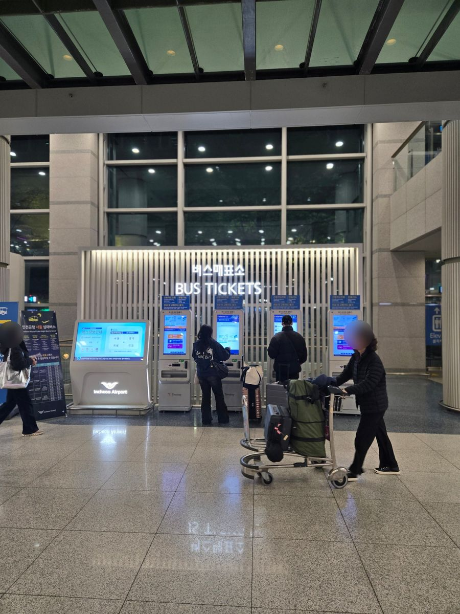
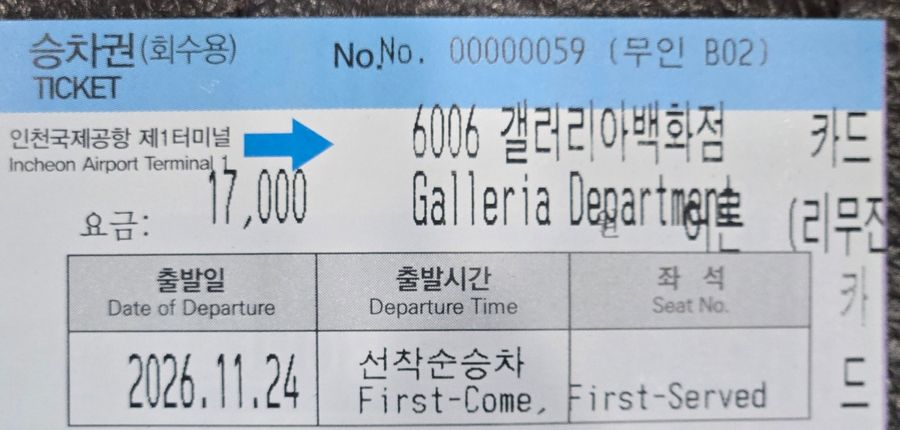
Leave the terminal through Exit 4.
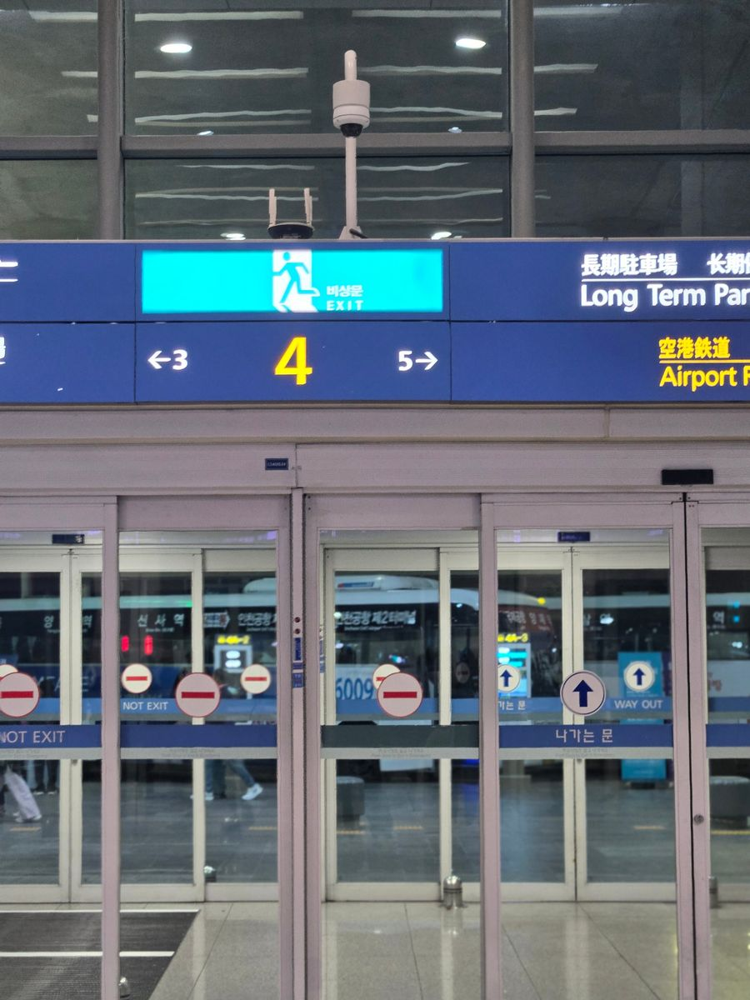
Outside Exit 4, go to bus stop 4B-3. The display shows 6006 and Jamsilsaenae Station (잠실새내역).
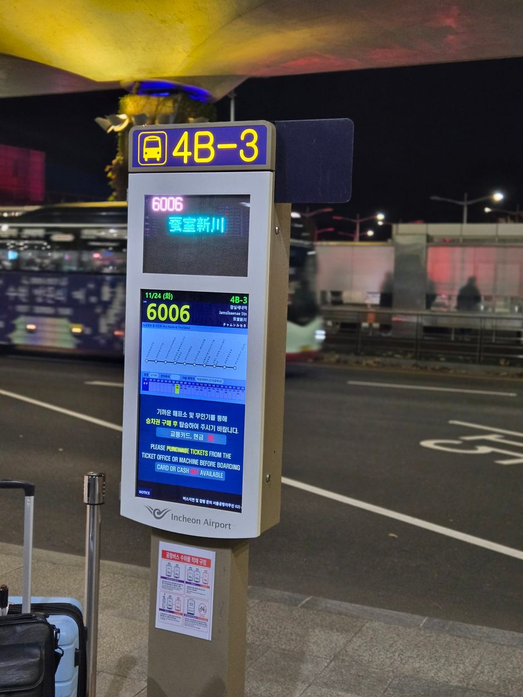
Board Airport Limousine Bus 6006 bound for Jamsilsaenae Station (잠실새내역). Have your ticket ready. Cash and transportation cards cannot be used on board.
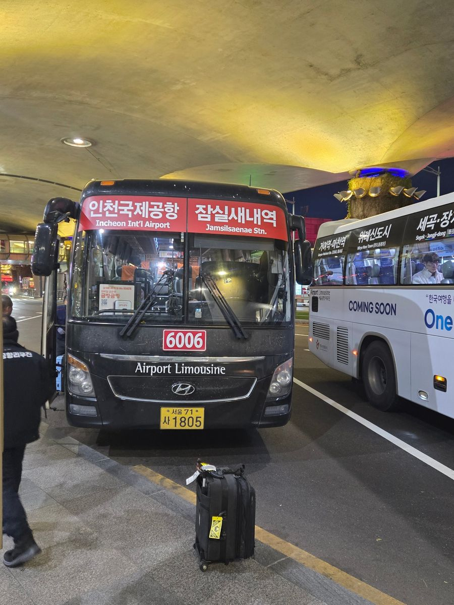
Get off at the Galleria Department Store (갤러리아백화점) stop, stop ID 23-159. To return to the airport, take bus 6006 from the stop on the opposite side of the road.
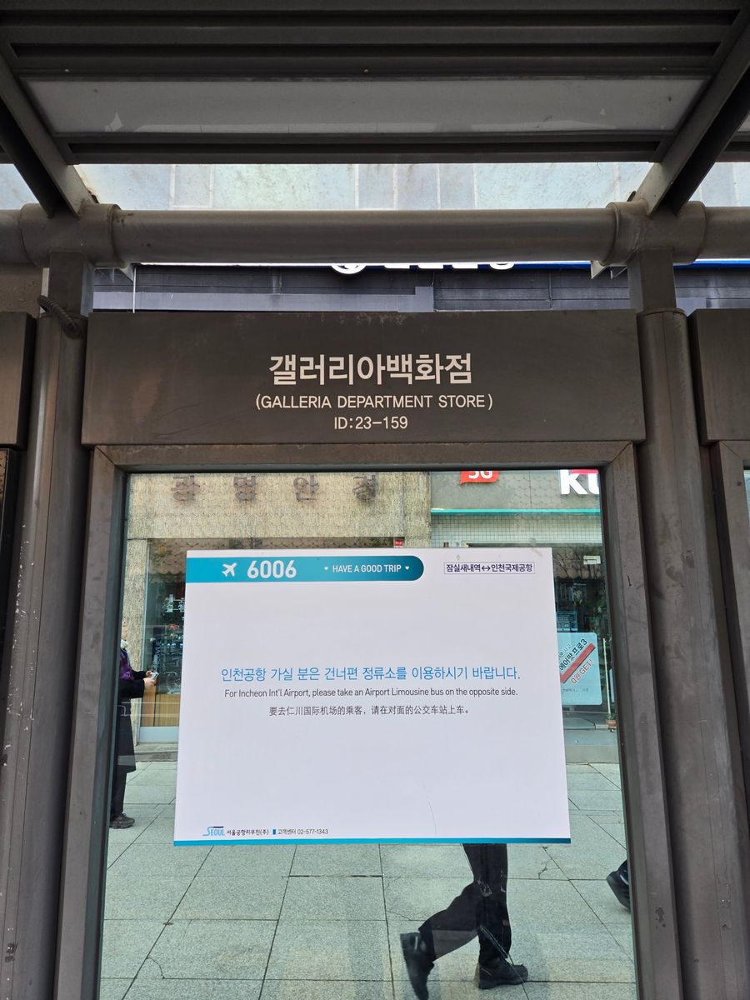
From the bus stop, walk toward the OLIVE YOUNG store on your right.
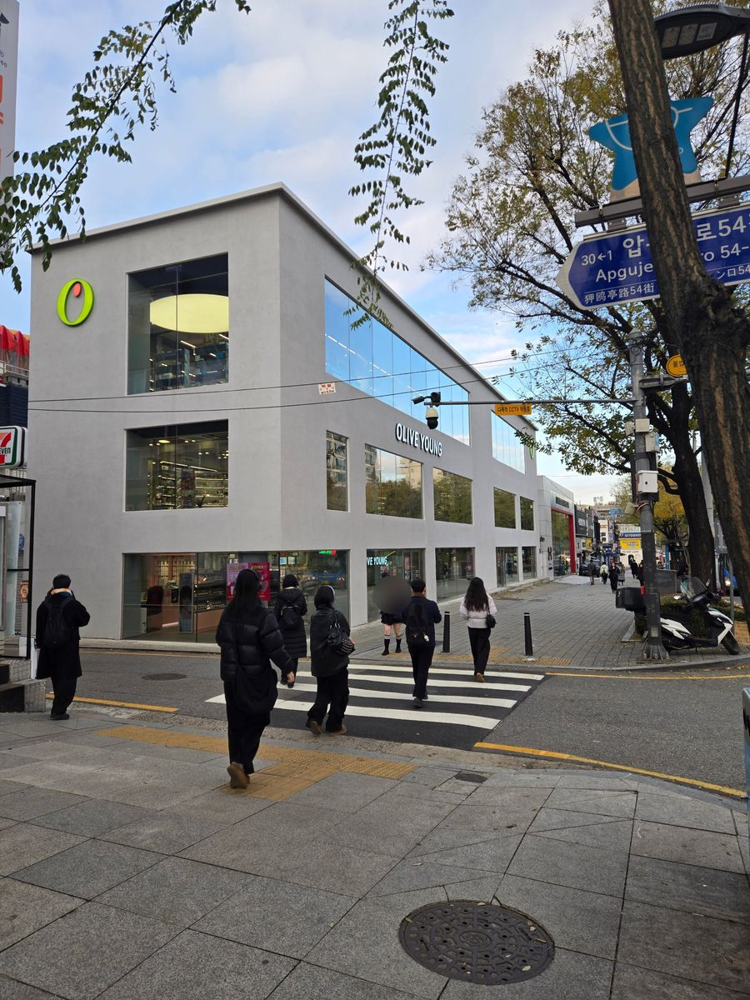
Walk straight down the street running alongside the 7-Eleven.
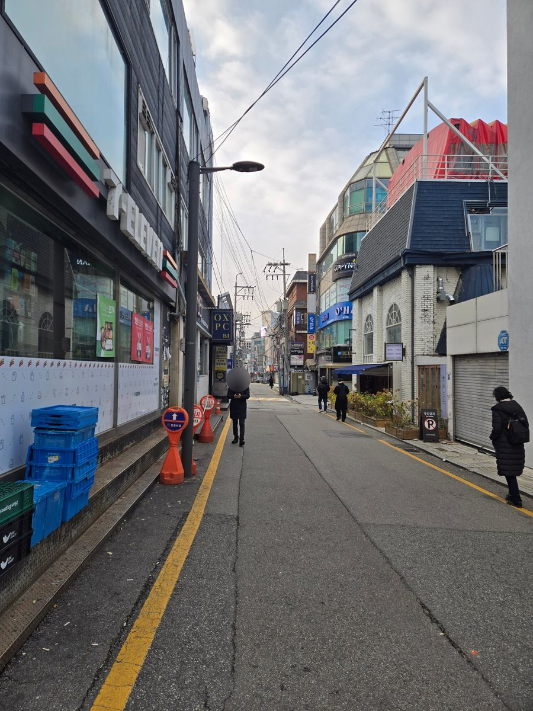
Keep going straight until you see GS25, then turn right at the GS25 corner.
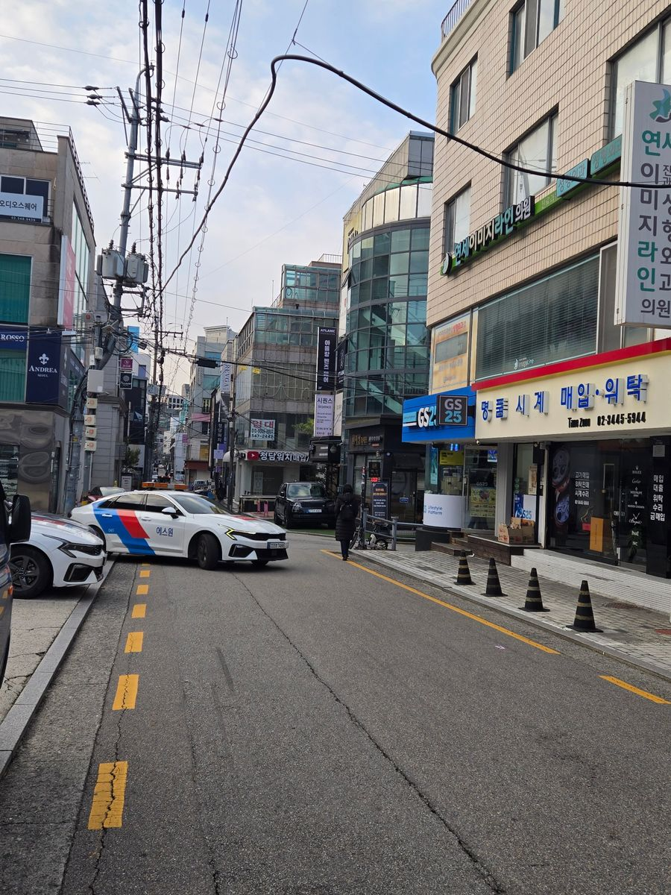
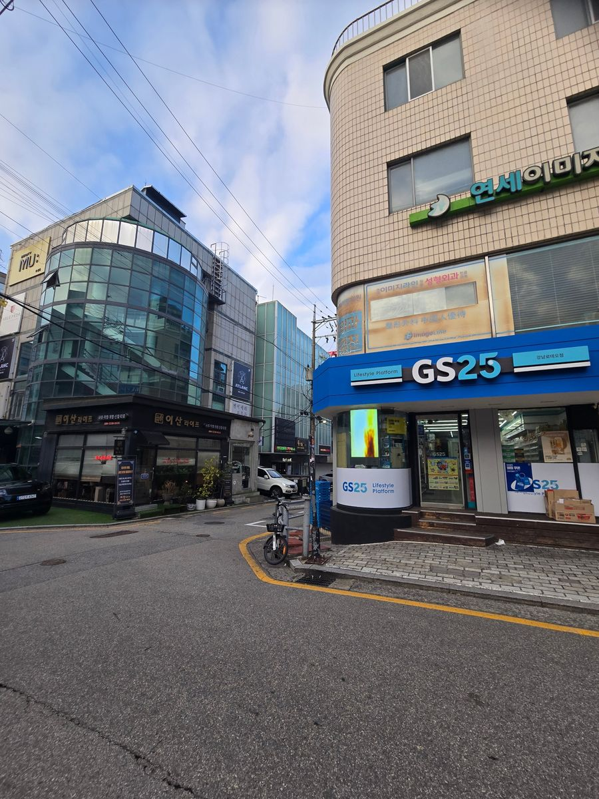
Look for the “ReYeon K” sign on the building. Check in on the 3rd floor.
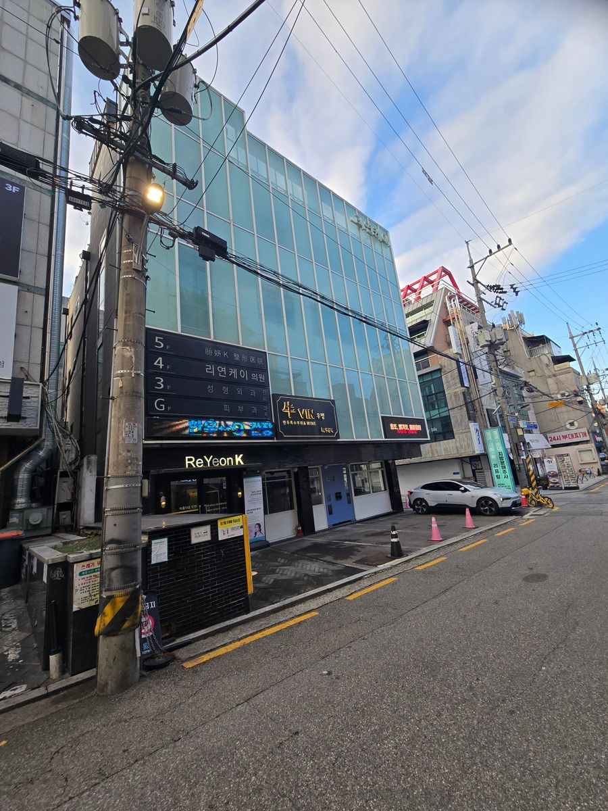
Reyeonk Clinic
64 Eonju-ro 172-gil, Gangnam-gu, Seoul (Reyeonk Building)
+82-2-558-5581
Need help finding us? Call us or message us on KakaoTalk. KakaoTalk
仁川国際空港 第1ターミナルから空港リムジンバス6006番に乗り、狎鷗亭（アックジョン）へ。ギャラリア百貨店（갤러리아백화점）で降りて、徒歩でReyeonk Clinicへ向かいます。
チケット購入 → 4番出口 → 4B-3乗り場 → 6006番バス → ギャラリア百貨店 → オリーブヤング → セブン-イレブンの道 → GS25で右折 → Reyeonk
到着ロビーの「BUS TICKETS（버스매표소）」にある券売機でチケットを購入します。目的地は「ギャラリア百貨店（갤러리아백화점）」、6006番を選択してください。券売機はクレジットカード専用です（現金・交通カードは使えません）。
ターミナルの4番出口から外に出ます。
4番出口を出て、4B-3乗り場へ向かいます。表示板に「6006」と「蚕室セネ駅（잠실새내역）」と表示されます。
蚕室セネ駅（잠실새내역）行きの空港リムジン6006番に乗車します。チケットをご用意ください。車内では現金・交通カードは使えません。
「ギャラリア百貨店（갤러리아백화점）」停留所（ID 23-159）で降ります。空港へ戻るときは、道路の反対側の停留所から6006番に乗ってください。
停留所から、右手に見えるOLIVE YOUNG（オリーブヤング）に向かって歩きます。
セブン-イレブンの横の道をまっすぐ進みます。
GS25が見えるまで直進し、GS25の角で右に曲がります。
「ReYeon K」の看板があるビルです。受付は3階です。
Reyeonk Clinic
ソウル特別市江南区彦州路172ギル64 Reyeonkビル
+82-2-558-5581
道に迷ったときは、お電話またはカカオトークでご連絡ください。 カカオトーク
จากสนามบินนานาชาติอินชอน อาคารผู้โดยสาร 1 ขึ้นรถบัส Airport Limousine สาย 6006 ไปยังอัพกูจอง ลงที่ป้ายห้างแกลเลอเรีย (갤러리아백화점) แล้วเดินต่อไปที่คลินิก Reyeonk
ซื้อตั๋ว → ทางออก 4 → ป้าย 4B-3 → รถบัส 6006 → ห้างแกลเลอเรีย → Olive Young → ถนนข้าง 7-Eleven → เลี้ยวขวาที่ GS25 → Reyeonk
ที่ห้องโถงผู้โดยสารขาเข้า ให้ไปที่จุด BUS TICKETS (버스매표소) และใช้ตู้จำหน่ายตั๋วอัตโนมัติ เลือกปลายทาง “Galleria Department Store (갤러리아백화점)” สาย 6006 ตู้รับเฉพาะบัตรเครดิต (ไม่รับเงินสดและบัตรโดยสาร)
ออกจากอาคารผู้โดยสารทางออกหมายเลข 4
เมื่อออกจากทางออกหมายเลข 4 ให้ไปที่ป้าย 4B-3 หน้าจอจะแสดง 6006 และสถานีชัมซิลแซแน (잠실새내역)
ขึ้นรถ Airport Limousine สาย 6006 ที่มุ่งหน้าสถานีชัมซิลแซแน (잠실새내역) เตรียมตั๋วให้พร้อม บนรถไม่รับเงินสดและบัตรโดยสาร
ลงที่ป้าย Galleria Department Store (갤러리아백화점) รหัสป้าย 23-159 หากต้องการกลับสนามบิน ให้ขึ้นรถสาย 6006 ที่ป้ายฝั่งตรงข้ามถนน
จากป้ายรถบัส เดินไปทางร้าน OLIVE YOUNG ที่อยู่ทางขวามือ
เดินตรงไปตามถนนด้านข้างร้าน 7-Eleven
เดินตรงไปจนเห็นร้าน GS25 แล้วเลี้ยวขวาตรงมุม GS25
มองหาป้าย “ReYeon K” บนอาคาร ลงทะเบียนที่ชั้น 3
Reyeonk Clinic
64 Eonju-ro 172-gil, Gangnam-gu, Seoul (อาคาร Reyeonk)
+82-2-558-5581
หากหาทางไม่เจอ โทรหาเราหรือส่งข้อความทาง KakaoTalk ได้เลย KakaoTalk
从仁川国际机场第1航站楼乘坐6006路机场大巴（Airport Limousine）前往狎鸥亭，在 Galleria 百货店（갤러리아백화점）站下车，步行到 Reyeonk Clinic。
购票 → 4号出口 → 4B-3站台 → 6006路大巴 → Galleria百货店 → Olive Young → 7-Eleven旁的路 → GS25右转 → Reyeonk
在到达大厅找到“BUS TICKETS（버스매표소）”售票处，使用自助售票机购票。目的地选择“Galleria Department Store（갤러리아백화점）”，6006路。售票机仅支持信用卡（不支持现金和交通卡）。
从4号出口（Exit 4）走出航站楼。
出4号出口后，前往4B-3乘车点。显示屏会显示“6006”和“蚕室新川（잠실새내역）”。
乘坐开往蚕室新川站（잠실새내역）的6006路机场大巴（Airport Limousine）。请准备好车票。车上不能使用现金和交通卡。
在“Galleria 百货店（갤러리아백화점）”站（站点编号23-159）下车。返回机场时，请到马路对面的站点乘坐6006路。
下车后，朝右手边的 OLIVE YOUNG 步行。
沿着 7-Eleven 便利店旁边的路一直往前走。
一直走到看见 GS25，在 GS25 路口向右转。
看到“ReYeon K”招牌的大楼即是。请到3楼办理登记。
Reyeonk Clinic
首尔特别市江南区彦州路172街64号 Reyeonk大楼
+82-2-558-5581
如果找不到路，请致电或通过 KakaoTalk 联系我们。 KakaoTalk
從仁川國際機場第1航廈搭乘6006路機場巴士（Airport Limousine）前往狎鷗亭，在 Galleria 百貨店（갤러리아백화점）站下車，步行到 Reyeonk Clinic。
購票 → 4號出口 → 4B-3站牌 → 6006路巴士 → Galleria百貨店 → Olive Young → 7-Eleven旁的路 → GS25右轉 → Reyeonk
在入境大廳找到「BUS TICKETS（버스매표소）」售票處，使用自動售票機購票。目的地請選擇「Galleria Department Store（갤러리아백화점）」，6006路。售票機僅接受信用卡（不接受現金及交通卡）。
從4號出口（Exit 4）走出航廈。
出4號出口後，前往4B-3候車處。顯示螢幕會顯示「6006」和「蠶室新川（잠실새내역）」。
搭乘開往蠶室新川站（잠실새내역）的6006路機場巴士（Airport Limousine）。請備妥車票。車上無法使用現金及交通卡。
在「Galleria 百貨店（갤러리아백화점）」站（站牌編號23-159）下車。返回機場時，請到馬路對面的站牌搭乘6006路。
下車後，朝右手邊的 OLIVE YOUNG 步行。
沿著 7-Eleven 便利商店旁邊的路一直往前走。
一直走到看見 GS25，在 GS25 路口右轉。
看到「ReYeon K」招牌的大樓即是。請到3樓辦理掛號。
Reyeonk Clinic
首爾特別市江南區彥州路172街64號 Reyeonk大樓
+82-2-558-5581
如果找不到路，請致電或透過 KakaoTalk 聯絡我們。 KakaoTalk